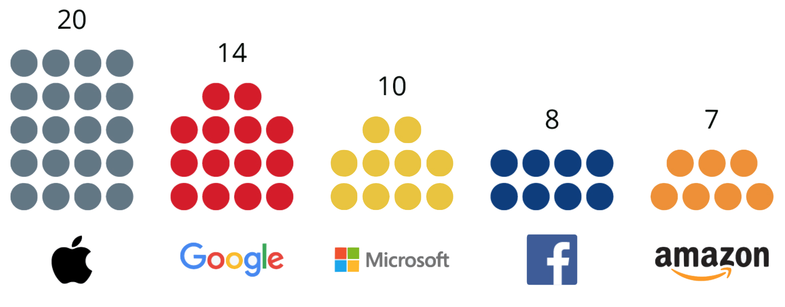

Prudence et enjeux éthiques
Actuellement, il existe un écart entre le monde scolaire et le reste de la société. La société évolue et prend un virage numérique à un rythme plus rapide que les écoles. Si une telle prudence des systèmes éducatifs est observée, c’est qu’elle est largement justifiée par les risques induits. D’un point de vue éthique, plusieurs questions se posent :
- Peut-on fait confiance à des algorithmes ?
Il existe des problèmes si complexes que la recherche d’une solution exacte et optimale à l’aide d’algorithmes est impensable pour le moment. Un humain doit donc exercer un regard sur les décisions prises par la machine, en particulier lorsque ces décisions risquent d’avoir un impact sur l’orientation scolaire ou professionnelle de la personne.
- Comment gérer le stockage et la confidentialité des données ?
Il est compliqué de protéger l’identité de l’élève si les traces de ses apprentissages sont stockées. Les personnes doivent être informées sur la façon et la durée de stockage de leurs données, tout en ayant un droit de refus.
- L'utilisation de l'IA en éducation ne peut-elle pas poser des problèmes de discrimination ?
L’utilisation des données personnelles pour personnaliser l'éducation entraîne des risques de renforcement des discriminations. Cela peut conduire à un accroissement des inégalités, avec des personnes stigmatisées par leurs données.
- Ne risque-t-on pas de tendre vers une uniformisation des parcours ?
Une perte d’originalité et de liberté serait inévitable en laissant les algorithmes décider.
Cela est d’autant plus inquiétant qu’actuellement, les GAFAM sont en tête de la course à l'intelligence artificielle. Développer des plateformes plus éthiques est une possibilités pour ces géants, mais ils n’ont pas d’intérêt à le faire, du moins à court terme. Bref, il faut se poser les bonnes questions avant de généraliser l’usage de l’intelligence artificielle dans l’éducation. En éduquant les populations à l’intelligence artificielle, cela réduirait déjà les risques de dérives. C’est donc un grand défi de faire comprendre l’IA aux générations futures. Elle ne doit pas être une boite noire qui n’est pas maîtrisée. Le conseil supérieur de l'éducation du Québec résume : « Il faut éduquer à l'intelligence artificielle tout autant qu'avec l'intelligence artificielle ».

Nombre de startups IA rachetées par les GAFAM depuis 2010 (données de CB Insights, septembre 2019)